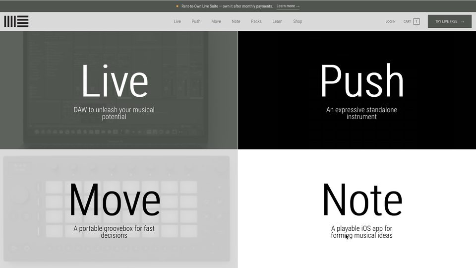
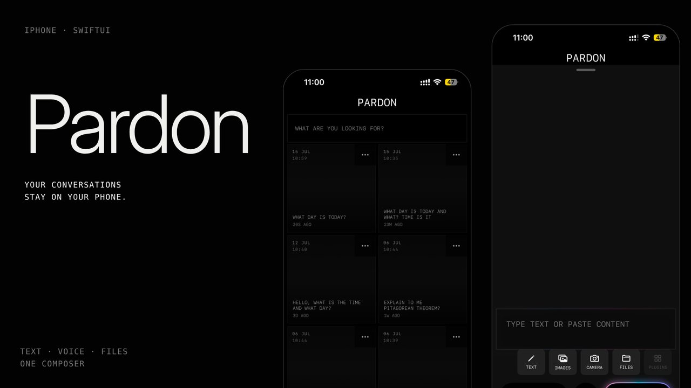
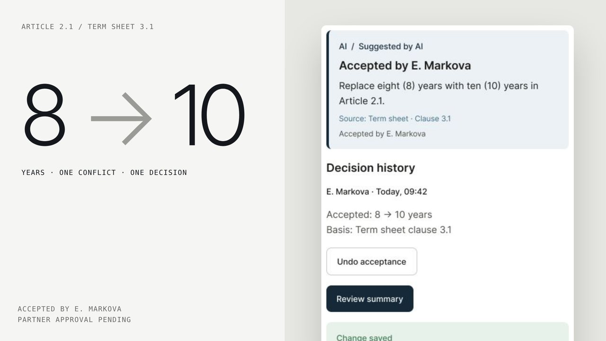
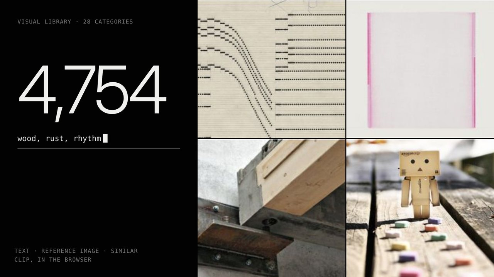
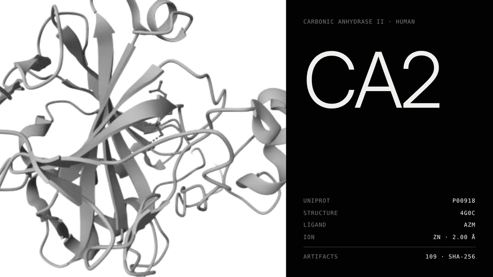
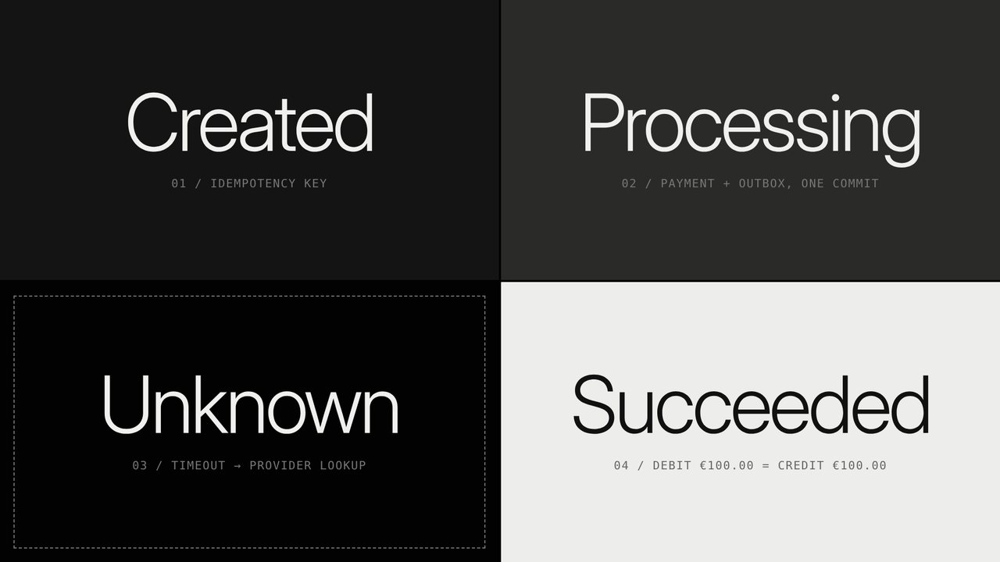
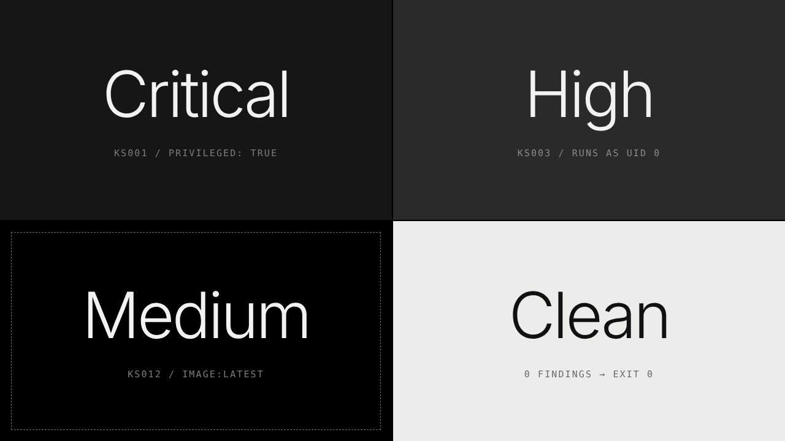
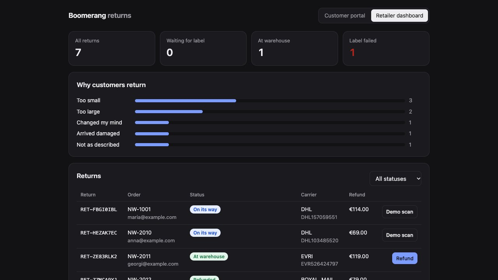

001
ABLETON LIVE REDESIGN
WEB APPLICATION / UI SYSTEM / FRONTEND 2026

001
A complete redesign of Ableton’s web experience, built around what makes Live different: Session View. Instead of treating Live as another item in a product catalogue, the site makes the clip-and-scene workflow legible — a place where a beat, a loop or a sketch can start before it becomes a song.
VIEW PROJECT →
002
PARDON — iPHONE AI ASSISTANT
iOS APP / UI·UX / SWIFTUI 2026

002
A local-first AI assistant for iPhone. Its conversations, profile and preferences stay on the device; voice, typed text and files meet in one calm composer. The real app can be installed and used directly through TestFlight.
VIEW PROJECT →
003
FUNDLIFE AI REVIEW WORKSPACE
PRODUCT DESIGN / FIGMA / AI-ASSISTED CONCEPT 2026

003
An independent concept for reviewing conflicting fund documents. One focused task takes a reviewer from an AI finding to source comparison, a recoverable amendment and partner approval.
VIEW PROJECT →
004
BASE AI VISUAL LIBRARY
AI SEARCH / DATA PIPELINE / WEB APPLICATION 2026

004
A searchable visual library of 4,754 images. Text, reference-image search and visual similarity turn a collection of inspiration boards into a focused discovery tool, with browser-based inference and time-limited demo access.
VIEW PROJECT →
005
BIODISCOVERY WORKBENCH
DATA ENGINEERING / SCIENTIFIC AI / 3D EXPLORER 2026

005
A scientific data explorer connecting protein structures, bioactivity evidence and a controlled Boltz-2 workflow. The live release brings molecular visualization, source provenance and reproducible data preparation together; GPU inference is the next milestone.
VIEW PROJECT →
006
TRUSTPAY
JAVA BACKEND / FINTECH / RELIABLE PAYMENTS 2026

006
A payment backend with identity controls, a balanced financial ledger and recovery after real failures. PostgreSQL transactions, a RabbitMQ outbox and provider reconciliation keep repeated requests and process crashes from producing duplicate financial effects.
VIEW PROJECT →007
KUBESIEVE
RUST / KUBERNETES SECURITY / CLI 2026

007
A command-line scanner, written in Rust, that reads Kubernetes manifests and reports privileged containers, root users, host mounts, plain-text secrets and over-broad RBAC before deployment. Terminal, JSON and SARIF output plug it into CI as a merge gate.
VIEW PROJECT →008
BOOMERANG
RUBY ON RAILS / E-COMMERCE RETURNS / FULL STACK 2026

008
A returns platform for online shops: the customer starts a return, the shop’s policy is checked, a carrier label is created and tracked to the warehouse before a refund. Idempotency keys, retried background jobs and signed, deduplicated webhooks keep a misbehaving carrier from creating duplicate labels or refunds.
VIEW PROJECT →